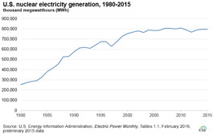

What is the status of the U.S. nuclear industry?
Did you know?
On December 2, 1942, under the bleachers of the football stadium at the University of Chicago, Dr. Enrico Fermi initiated the first controlled nuclear chain reaction. The experiment, conducted as part of the wartime atomic bomb program, also led to peaceful uses of the atom, including construction of the first U.S. nuclear power plant at Shippingport, Pennsylvania, in 1957.
Annual nuclear generation in the United States has remained relatively steady in recent years.
Did you know?
The Grand Coulee Dam in Washington has the most electricity generation capacity of any electric power plant in the United States, at 7,079 megawatts (MW) net summer capacity. The Palo Verde nuclear power plant in Arizona ranks second in the nation with a capacity of 3,937 MW. Nuclear plants use more of their capacity on an annual basis than hydropower facilities. In 2014, Grand Coulee generated about 20,262 gigawatthours of electricity, while Palo Verde generated about 32,321 gigawatthours.
The United States has 100 operating commercial nuclear reactors at 60 nuclear power plants. The average age of U.S. nuclear reactors is about 35 years old. The oldest operating reactors, Nine Mile Point Unit 1 and Oyster Creek, began commercial operation in December 1969. Thirty-four reactors began commercial operation between 1985 and 1996. Four reactors were permanently shut down in 2013, and one reactor was taken out of service in 2014. The newest reactor to enter service, Watts Bar Unit 2, came online in June 2016 and is expected to begin commercial operation by the end of 2016.
Since 1990, the share of total annual U.S. electricity generation provided by nuclear power has averaged about 20%. Nuclear generation has generally increased through power plant modifications to increase capacity (known as uprates) and by shortening the length of time reactors are offline for refueling.
Thirty states have at least one commercial nuclear reactor
Most of the commercial reactors in the United States are located east of the Mississippi River. Illinois has the largest number of commercial reactors (11) and, as of December 31, 2015, had the largest nuclear net summer electricity generation capacity at about 11,590 megawatts (MW). The largest reactor in the United States, with a capacity of more than 1,350 MW, is the Grand Gulf Nuclear Station, located in Port Gibson, Mississippi. The smallest reactor, with a capacity of 478 MW, is at Fort Calhoun, Nebraska.
Four reactors were permanently shut down in 2013:
- Crystal River Unit 3 in Florida
- Kewaunee Power Station in Wisconsin
- San Onofre Nuclear Generating Station Units 2 and 3 in California
One reactor was removed from service in 2014:
- Vermont Yankee in Vermont
One reactor began initial operation in June 2016:
- Watts Bar Unit 2 in Tennessee
Four new nuclear reactors are actively under construction:
- Vogtle Units 3 and 4 in Georgia
- Virgil C. Summer Units 2 and 3 in South Carolina

{kind=link}
{kind=link}
{kind=link}
Many plants have more than one reactor
The term power plant refers to an entire facility. A power plant may contain nuclear as well as non-nuclear electricity generating units. Each nuclear reactor located at a commercial nuclear power plant is unique and has its own personnel and equipment. The reactor provides heat to make steam, which drives a turbine and, in turn, drives the generator that produces electricity.
Thirty-six U.S. nuclear power plants have at least two reactors. Although some foreign nuclear power plants have as many as eight reactors, only three U.S. plants have more than two operational reactors: Palo Verde Nuclear Generating Station in Arizona, Browns Ferry Nuclear Power Plant in Alabama, and Oconee Nuclear Station in South Carolina.
Nuclear power plants are generally used more intensively than other power plants
For cost and technical reasons, nuclear power plants are generally used more intensively than coal units or natural gas units (see capacity figure at right). In 2015, the nuclear share of total U.S. electricity generating capacity was 9%, while the nuclear share of total electricity generation was about 20%.
Recent U.S. nuclear construction activity
In June 2016, the Tennessee Valley Authority's (TVA) Watts Bar Unit 2 in Tennessee became the first new U.S. reactor to come online since 1996. Watts Bar Unit 2 is expected to begin commercial operation by the end of 2016.
In February 2012, the U.S. Nuclear Regulatory Commission (NRC) voted to approve Southern Company's application to build and operate two new reactors, Units 3 and 4, at its Vogtle plant in Georgia. The Vogtle reactors are the first new reactors to receive construction approval in more than 30 years. In March 2012, the NRC voted to approve South Carolina Electric & Gas Company's application to build and operate two new reactors, Units 2 and 3, at its Virgil C. Summer plant in South Carolina.
When will new reactors in the United States come online?
Although four nuclear reactors were retired in 2013 and one was retired in 2014, nuclear generation capacity at the end of 2015 was about the same as nuclear capacity in 2002, when there were 104 operating reactors. Power plant modifications to increase capacity (uprates) at existing power plants have made it possible to maintain the same nuclear capacity. These uprates, combined with high capacity utilization rates, have allowed nuclear power to consistently maintain a share of about 20% of total annual U.S. electricity output since 1990. With many nuclear plants operating at or near capacity, maintaining the current share will depend on new reactors being built, as electricity demand increases.
Four new reactors that are now under construction (Vogtle Units 3 and 4, and Summer Units 2 and 3) are expected to come online between 2019 and 2020. The related Today in Energy article of June 14, 2016, explains more about these new reactors.
As of May 2016, the NRC had about 20 applications for new reactors in various stages of review. The NRC application review process can take up to five years to complete. Under current licensing regulations, a company that seeks to build a new reactor can use off-the-shelf reactor designs that the NRC has previously approved. The design certification the NRC issues is independent of approvals of applications to construct or operate a new nuclear power plant. When the applicant uses an NRC-certified reactor design, that means that all safety issues related to the design have been resolved, and the focus of the NRC's review is the quality of construction. Construction of a nuclear power plant may take five years or more. EIA projects that new nuclear electricity generation capacity will be added through 2040, but that capacity retirements and derates will result in only a small net increase in generation capacity from nuclear power by 2040.